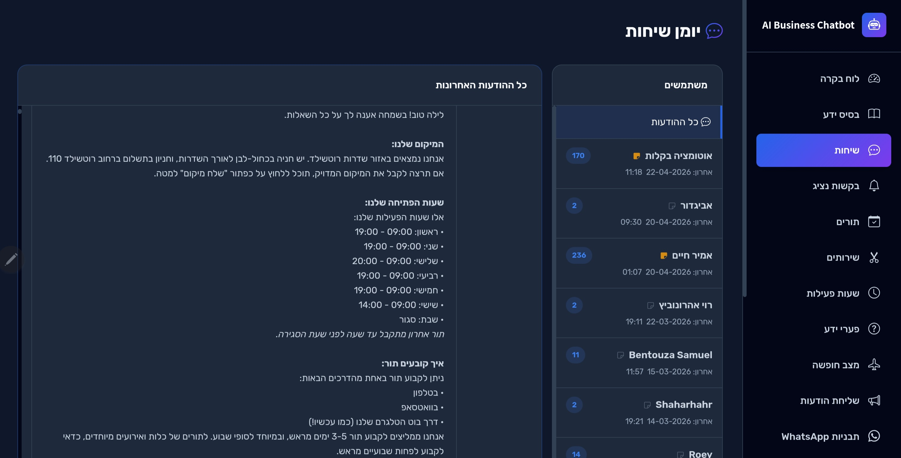
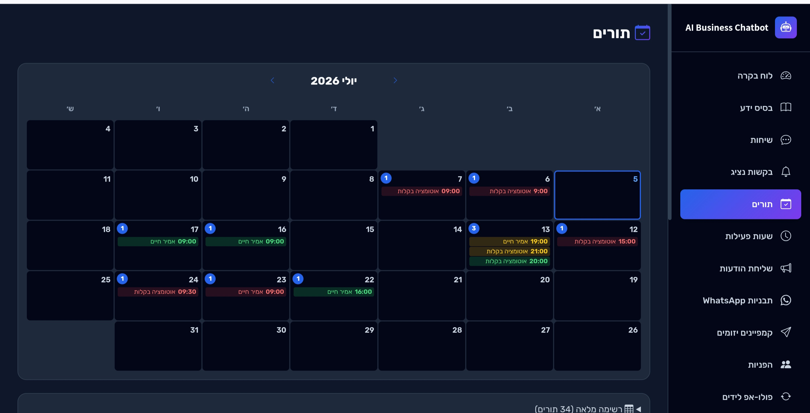
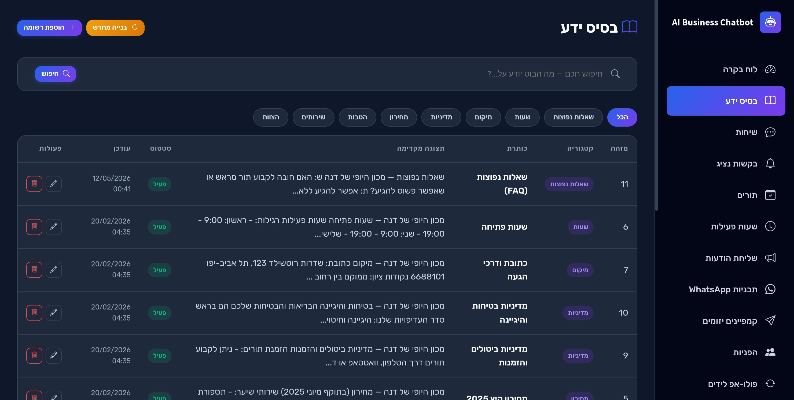

הוא עונה ללקוחות שלכם תוך שניות, קובע תורים ביומן שלכם ואוסף כל פנייה לפאנל. אתם רואים כל מילה שנאמרת, ונכנסים לשיחה מתי שבא לכם.
זמן תגובה: 3 שניות · הלקוחה ישנה. התור נקבע.
זו השאלה הראשונה שכל מטפלת שואלת אותנו, ולכן היא נמצאת כאן ולא בסוף הדף. כל שיחה נשמרת ומוצגת לכם בפאנל, בזמן אמת, כולל מה שהבוט ענה ומתי.

יומן שיחות מלא, לפי לקוח, עם כל מה שנאמר. אין הודעה שנשלחת בלי שתוכלו לקרוא אותה.
ברגע שאתם עונים, הבוט משתתק ולא חוזר עד שתחזירו לו את השיחה. הלקוח לא מרגיש מעבר.
אין לו מידע מבוסס? הוא לא מנחש. הוא אומר שיבדוק ומעביר אליכם — וגם מראה לכם על מה לא ידע לענות.
ידידותי, רשמי, יוקרתי או ניטרלי — או הנחיות שאתם כותבים בעצמכם, בדיוק בשפה שאתם מדברים עם המטופלים.
אתם באמצע טיפול, בפגישה, או פשוט ישנים. ההודעות ממשיכות להגיע — והלקוח לא מחכה.
ונענית למחרת בבוקר. עד אז היא כבר קבעה במקום אחר.
השאלה הכי קלה בעולם, ואף אחד לא היה פנוי לענות עליה.
מי מגיע מחר? מי ביטל? מתי צריך לשלוח תזכורת?
מישהו התעניין, ואף אחד לא חזר אליו. הוא עדיין שם, איפשהו למעלה בשרשור.
כל פנייה נענית תוך שניות — גם ב-2 בלילה, גם בשבת, גם כשאתם באמצע טיפול.
הכול על בסיס המידע שאתם נותנים לו — ואתם רואים כל שיחה בפאנל.
מחירים, שעות, מדיניות ביטולים, מיקום ושאלות נפוצות — בשיחה אמיתית, לא בתפריט לחצנים.
מחובר ל-Google Calendar, מציג רק שעות פנויות באמת, ומוסיף את התור אוטומטית.
מי הוא, מה שאל ומה חשוב לו. בפעם הבאה שהוא כותב — הבוט ממשיך מאיפה שהפסקתם.
יום לפני התור ושוב כמה שעות לפניו — פחות אי-הגעות, בלי שתזכירו לאף אחד.
טבלה מסודרת עם חיפוש, תגיות והערות — במקום אקסלים ופניות שנופלות.
לוח בקרה חי, כניסה לשיחה בלחיצה, אנליטיקות ועריכת המידע של העסק בכל רגע.
לא הדמיה ולא סרטון מבויים. אפשר גם להיכנס לסיור חי ולנווט בעצמכם.


מתוך ניסיון אמיתי בעבודה משותפת על פרויקט ללקוח עסקי. אמיר יודע להקשיב, להבין בדיוק מה צריך, ולבצע מהר… והכי חשוב בעיניי — יש לו הבנה של צד המשתמש, ורואים את זה בתוצאה.
אני ממליץ בחום על אמיר חיים. אדם מקצועי, אמין ונעים לעבוד איתו… הוא מביא איתו יכולת מצוינת לפתור בעיות בצורה יעילה וחכמה.
אמיר לקח את הרעיון שלי והפך אותו לאתר שעונה בדיוק על מה שדמיינתי… העבודה הייתה מהירה, נעימה ומקצועית. ממליצה בחום!
בלי מדרגות מסובכות ובלי הפתעות. מנסים חינם, ואם זה מתאים — ממשיכים.
בדיוק מה שאתם משלמים עכשיו.
לאחר מכן 300₪ לחודש. ללא כרטיס אשראי, ללא התחייבות — מפסיקים מתי שרוצים.
אפשר לשדרג למודל AI חכם יותר בתוספת 30₪ לחודש.
כל מה שהבוט ופאנל הניהול יודעים לעשות, מחולק לפי נושא. פתחו את מה שרלוונטי לכם.
אלו השאלות שכל לקוח שואל לפני שמתחילים — ואנחנו מעדיפים לענות עליהן מראש.
כן. רוב הלקוחות שלנו הם בעלי עסקים, לא מפתחים. אנחנו מסבירים הכול בעברית פשוטה, מלווים אתכם בכל שלב, ומגישים מערכת שאפשר לנהל בעצמכם בלי להבין בקוד.
לאחר אימות העסק, חיבור ל-WhatsApp API ועלייה לאוויר לוקחים עד חמישה ימי עסקים, תלוי באישורי Meta. לאחר מכן המערכת פעילה מיידית.
בהחלט. הבוט מתאים לכל עסק שרוצה לעשות סדר בוואטסאפ — מטיפול נפשי, מסעדות ונדל"ן ועד קוסמטיקה. אין צורך בידע טכני כלשהו.
רק רשימה מסודרת של שירותי העסק, מחירים, שעות פתיחה, וכל דבר שתרצו שהבוט יידע על העסק — ואנחנו נדאג לכל השאר.
כן. יש בפאנל תצוגה חודשית של לוח שנה עם כל הפגישות בתוכו, כך שאתם תמיד יודעים מה מתוכנן.
משאירים פרטים בצ'אט ואנחנו חוזרים אליכם בהקדם 🙂
חודש ניסיון מלא, בלי כרטיס אשראי ובלי התחייבות. אם זה לא מתאים — פשוט מפסיקים.
אני בונה את המערכת, אני מקים אותה אצלכם, ואני זה שעונה כשמשהו לא עובד. מדברים איתי — לא עם מוקד.